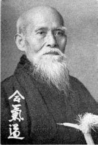

Aikido is a modern Japanese martial art that was developed early in this century by Morihei Ueshiba (1883-1969). In Japanese, Aikido means "the way of harmony with the force and principle of nature." Aikido is derived from Japan's traditional budo (the way of martial arts), yet goes beyond the realm of budo; it is a path where the keen edge of martial art is used as a "Way" to spiritual growth.
The most outstanding feature of physical training found in Aikido is the repetitive practice of various motions known as kata (forms), until rational and unforced movement flows naturally throughout the body. By unifying body, mind and ki (internal energy), and by utilizing internal order together with physical balance, the hidden potential of each person may be expressed through the dynamism of technique. Using circular motions, Aikido harmonizes and neutralizes the aggressor's force. Training involves physical, mental, spiritual and ethical disciplines. It includes empty hand techniques, sword, stick, and knife defenses. Unique among martial arts, Aikido minimizes the need to maintain control of situations.
The fact that there are no competitions in Aikido is a logical conclusion of its philosophy. Since winning and losing are never a concern, the trainees are free to dedicate their efforts to mutual goals. It is therefore possible for men, women, and children of all ages to walk together down the path of budo, the heart of Aikido. Each individual trains and progresses at his or her own pace, finding harmony through personal development. Regular practice brings a sense of well-being and self-confidence that permeates all aspects of daily life. As people with varying personalities and lifestyles come together for practice, they gain concrete experience in reconciling different points of view. In Aikido, there is no "Way" except the path of confronting "the enemy" that lies within oneself. Aikido is a path of dogged perseverance and dedication to improving both spirit and body. The recognition and acceptance of this aspect of training are the surest means of consistent personal development.
Aikido is not only a spiritual discipline but also involves physical mastery. We learn to respect others through mutual physical contact. In this way, a means of communication is established which transcends the barriers of lifestyle, language, culture, and race. Aikido, as a martial Way for all people, is like a compass which directs the completion and unification of each person's body, mind, and spirit with the fundamental and creative spirit of the universe.
Birankai NA welcomes people of all ages, abilities, beliefs, incomes, races, nationalities, genders, and sexual identities.